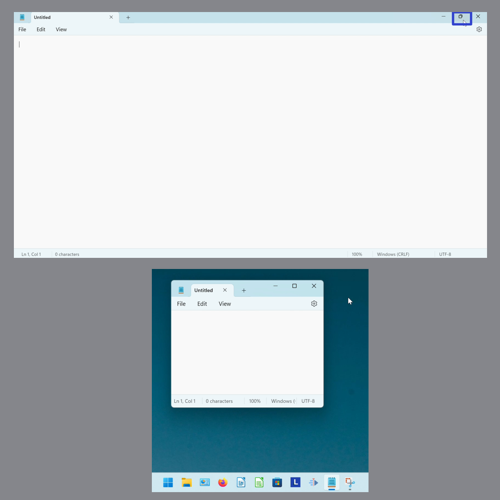
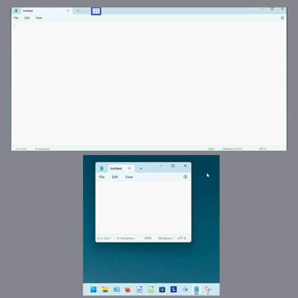
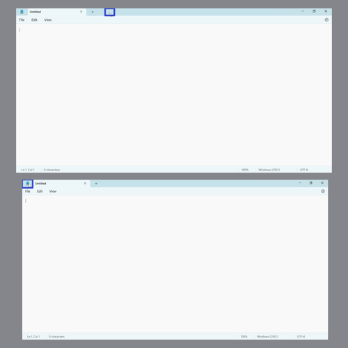
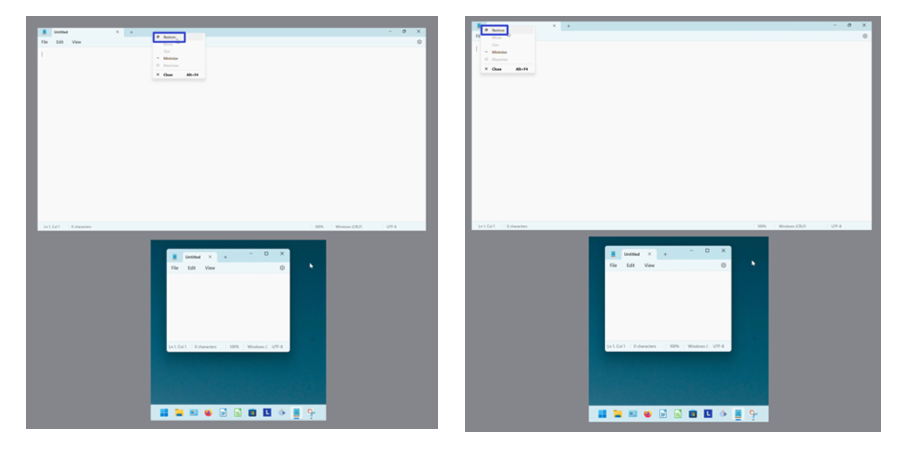
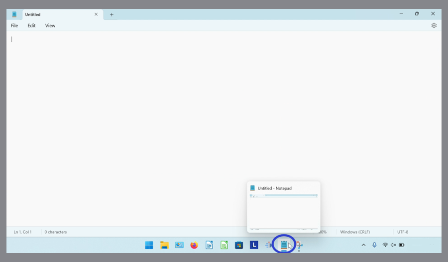
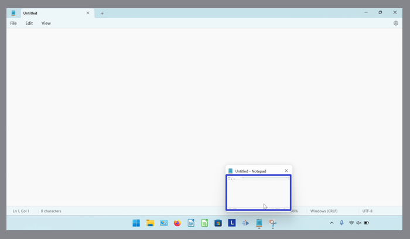
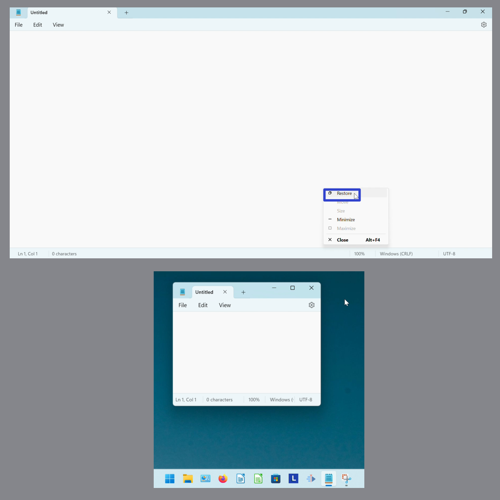

How to Restore the Microsoft Notepad App (Windows 11)
This tutorial covers:
How to Restore Notepad:
No time to scroll down? Click through these presentation slides:
Watch a video tutorial:
How to Restore Notepad With Click
- Step 1: First maximize Notepad. Go to the upper right and click the “Maximize” button. The Notepad window is restored to its original size. 
How to Restore Notepad With Double Click
- Step 1: Maximize Notepad. Double click the top of the window. The Notepad window is restored to its original size. 
How to Restore Notepad With Right Click
- Step 1: First maximize Notepad. Right click the top of, or the upper left corner of the Notepad window. 
- Step 2: In the menu that opens, click “Restore”. The Notepad window is restored to its original size. 
How to Restore Notepad With Menu
- Step 1: Maximize Notepad. Go down to the taskbar and hover over the Notepad app icon. 
- Step 2: Right click the small window that appears. 
- Step 3: In the menu that opens, click “Restore”. The Notepad window is restored to its original size. 
Save these instructions for later with this free PDF tutorial.